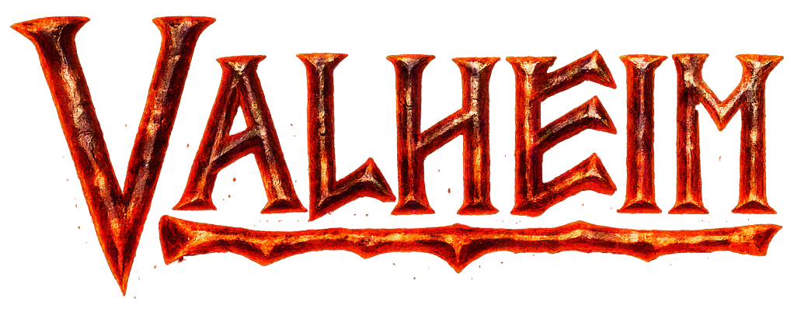

Valheim
Retour aux Aventures en cours
La Guilde part explorer les terres sauvages
d'un monde nordique rempli de mystères.
📜 Informations de l'expédition
Origine : Le Mercredi Chaos ☠️
Statut : En expédition ⚔️
📅 Début : Août 2026
🎮 Type : Survie / Exploration / Construction
👥 Participants : Natas, Elfyre, Kitana, Kirito
📖 Histoire de l'aventure
Bannis au cœur d’un royaume oublié, les guerriers de la Guilde doivent survivre dans les terres sauvages de Valheim.
Entre forêts mystérieuses, montagnes glacées et créatures légendaires, chaque biome réserve de nouveaux dangers et de nouvelles épreuves.
Pour progresser, il faudra construire un véritable bastion, forger des armes toujours plus puissantes et affronter les créatures qui règnent sur ces terres afin de prouver notre valeur aux dieux.
🎯 Objectifs de l'expédition
- 🌲 Explorer les terres sauvages d’un monde oublié
- 🛡️ Ériger un bastion digne des guerriers d’Odin
- 🐉 Affronter les créatures légendaires
🎬 Souvenirs de l'expédition
Retrouvez les chroniques de cette aventure.